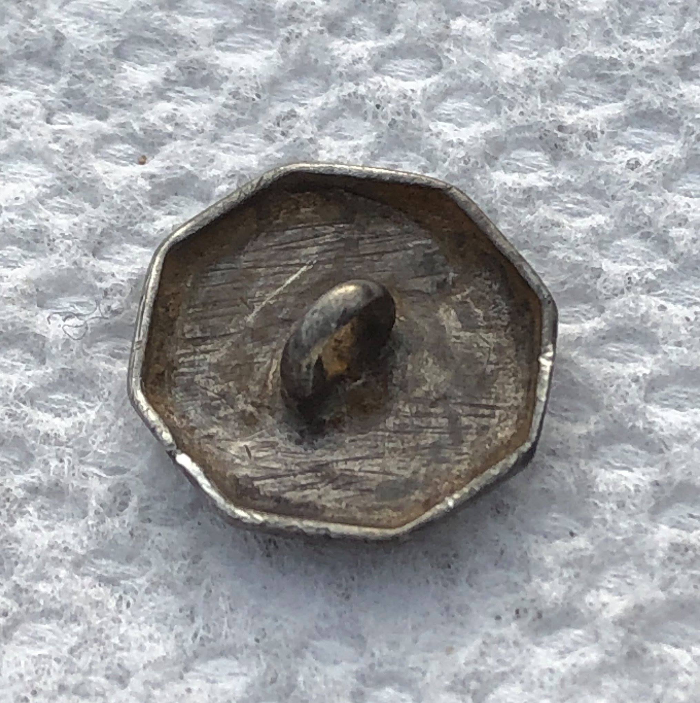

Metal Detecting Gallery
I started metal detecting in 2018 with the Garrett Ace 400, which was a hand me down from my partner, Stef; aka, StefDigs, when she got her Equinox 600. It wasn't that long after, that I also bought the Equinox 600 and I've been with Minelab ever since. I updated to the new Equinox 900 this past Decemeber 2022.
Here is a collection of my best finds. I tried my best to give a little background story for each item and any information pertaining to it as well.
Etched silver cufflink. Circa 1700s.


This is by far one of my most favorite finds. I found it on an old cart path in the woods; and not only to pull silver out of the hole, but 300 years old, and etched by hand! Truly amazing.
Another cool story regarding this, fastforward 4 years later on the exact day, 12-29-22, StefDigs was detecting in a different area of the same woods and found the exact same thing! Hers is slightly larger, and was bent, but exact same desgn.
1830 Capped bust dime.

I had given up for the day and was headed back to my car. Right before I reached my destination this whopping signal jumped out at me. Great way to end the day!
Recovered in Hebron, CT
Massachussetts copper, 1787 (reverse). Found in CT.
I found this in the yard of a 1732 house, smack in the middle of the small back yard.
Brass Skeleton Key.

This is by far one of my favorite finds, because I've always loved skeleton keys. So this really meant something to me to find. It's my only one so far.
This is the key I used to make the logo for my wood turning page TurnKey Wood Crafts.
Recovered in CT.
This was the only thing I found this day. A loud 25 on the Equinox 600. It took me awhile, digging through roots and rocks. I'm lucky I didn't smash it, the way I was banging in the hole.
Recovered in Hebron, CT

1900 Barber quarter and 1911 barber dime spill.
Found at an early 1900s "cellar hole".
Recovered 6-30-18; Hebron, CT
This was found in the same area.
KGII: CT half penny (obverse). 1788.


Both these coins were found at a rev war prison camp in Massachussetts.


KGII: King George II half penny (obverse). 1727-1760.
KGII: King George II half penny (reverse). 1727-1760.
Recovered 6-2-19; Rutland, MA

Large crotal bell. Found during a group hunt in MA.
3000 year old pottery found at a site where natives had made arrowheads. Thousands of stone shards littered the sand, along with small bits of clay pottery. This was one of the largest pieces found, at this event.
Recovered March 6, 2022; Orangeburg, SC @ Relicon 2022